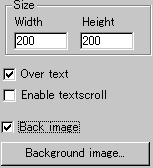
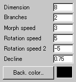
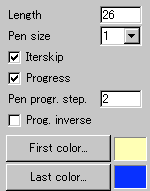

|
This applet simulates a L-system fractal tree, which
morphs and rotate periodically. A L-system or Lindenmayer system
is a formal grammar which generate strings by a set of rules. By
applying the rules recursively to an initial string, the string
with fractal structure is generated. An interesting point is that
although the rule itself can be very simple, after many iterations,
the result is complex enough to represent the real world phenomena.
For example, some graphical interpretations of a L-system can show
a realistic compound leaf or branch. In fact, this applet is a L-system
fractal tree generator.
[For more technical
information about the available parameters, click here.]
Most parameters are self-explanatory and you can
always see brief description of each parameter by moving the mouse
pointer over the wizard.
 |
First, set the applet size at "Width"
and "Height" boxes, and select either background
image or colour (shown at left-below image).
If you need text scrolling, then, check "Enable
textscroll" box.
|
| You can choose if the fractal tree
is rendered over the text by checking "Over text"
box. |
 |
Second, you will define the movement of fractal
trees.
"Dimension" represents the
number of iterations of adding branches to an initial tree
trunk. The IFS-fractal tree grows up following restrictive
branch-adding rules.
|
|
"Branch" parameter defines
how many new branches are added to an existing branch per
iteration. So, the larger values for "Dimension"
and "Branches" mean more complex tree generated.
The motion of the tree is defined by three
parameters:
(1) Morph speed, (2) Rotation speed, and (3)
Rotation speed 2:
(1) Morph speed decides how fast the
whole tree changes its shape.
(2) Rotation speed decides how fast
each branch of the tree rotates.
(3) Rotation speed 2 decides the rotation
speed of the whole tree.
Next, look at below-left picture and find
"Length" parameter. This is the length of
an initial tree trunk. After every iteration, shorter branches
are added first to the initial trunk and after that each branch.
"Decline" parameter (normally, 0 < "Decline"
< 1) controls the magnification of branch length per iteration.
For example. 0.75 for the value gives 25% decrease of the
length for each iteration.
Note: A value for "Decline"
can be more than 1. However, it is unnatural to see such a
tree! For instance, 1.25 gives 25% increase of the length
for each iteration.
|
 |
"Pen size" sets
the constant thickness of a branch up to size 3. Or, alternatively,
you can use a progressive pen with your choice of progressive
speed at "Pen progr. step". To do that, just
check "Progress" box and enter a value between
1 and 16 in "Pen progr. step" field. |
You can also inverse the progression by checking
"Prog. inverse" box.
"Iterskip" is totally a different
parameter. With this parameter enabled, some joints between branches
are skipped to be rendered, so it produces a strange effect.
Finally, select the gradient colour painted over
the whole fractal tree at "First colour" and "Last
colour".
Proceed to the textscroll
menu if you have checked the textscroll box; otherwise go to
the expert menu.
|